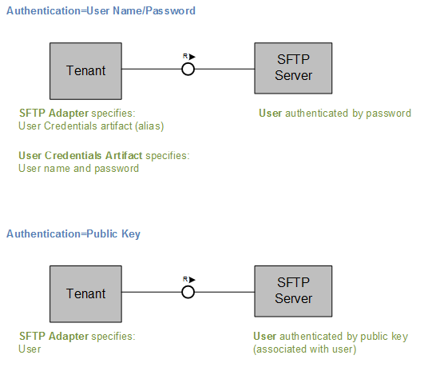
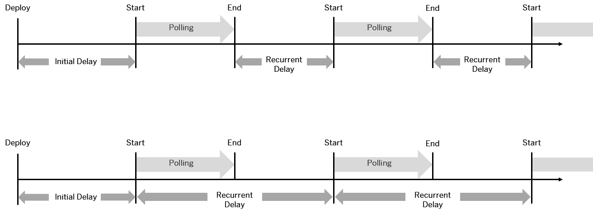

You can use the SFTP sender adapter to transfer files from an SFTP server to the tenant using the SSH protocol.
How the Sender SFTP Adapter Works
If you have configured a sender SFTP adapter, message processing is performed as follows at runtime: The tenant sends a request to an SFTP server (think of this as the sender system), but the data flow is in the opposite direction, from the SFTP server to the tenant. In other words, the tenant reads files from the SFTP server (a process that is also referred to as polling).
To configure a sender channel, click on a connection between a sender and the Integration Process component.
On the Source tab of the sender channel, specify the following attributes.
|
Field |
Description |
|---|---|
|
Directory |
Use the relative path to read the file from a directory, for example, <dir>/<subdir>. |
|
File Name |
Name of the file to be read. Note
If you do not enter a file name and the parameter remains blank, all the files in the specified directory are read. Note
Usage of file name pattern: Regular expressions, such as ab*, a.*, *a*, ?b, and so on, are supported. The expression * replaces no character or an arbitrary number of characters. The expression ? replaces exactly one arbitrary character. Examples: If you specify file*.txt as the File Name, the following files are polled by the adapter: file1.txt, file2.txt, as well as file.txt and file1234.txt, and so on. If you specify file?.txt as the File Name, the following files are polled by the adapter: file1.txt, file2.txt, and so on, but not the files file.txt or file1234.txt. Although you can configure this feature, it is not supported when using the corresponding integration content with the SAP Process Orchestration (SAP PO) runtime in releases lower than SAP PO 7.5 SP5. Caution
Files with file names longer than 100 characters will be processed with the following limitations:
|
|
Address |
Host name or IP address of the SFTP server and an optional port, for example, wdfd00213123:22. |
|
Authentication Note
In the following cases this new feature might not be available for your current
integration flow:
More information: |
Authentication option for the connection to the SFTP server. You have the following options:
|
|
Credential Name (Only available if you have selected User Name/Password for Authentication) Note
In the following cases this new feature might not be available for your current
integration flow:
More information: |
Name of the User Credential artifact that contains the user name and password. |
|
User Name (Only available if you have selected Public Key for Authentication) |
ID of the user performing the file transfer. Make sure that the user name contains no other characters than A-z, 0-9, _ (underscore), - (hyphen), / (slash), ? (question mark), @ (at), ! (exclamation mark), $ (dollar sign ), ' (apostrophe), (, ) (brackets), * (asterisk), + (plus sign), , (comma), ; (semicolon), = (equality sign), . (dot), or ~ (tilde). Otherwise, an attempt for anonymous login is made which results in an error. |
|
Timeout (in ms) |
Maximum time to wait for the SFTP server to be contacted while establishing connection or performing a read operation. Default value: 10000 ms |
|
Maximum Reconnect Attempts |
Maximum number of attempts allowed to reconnect to the SFTP server. Default value: 3 Use 0 to disable this behavior. |
|
Reconnect Delay (in ms) |
How long the system waits before attempting to reconnect to the SFTP server. Default Value: 1000ms |
|
Automatically Disconnect |
Disconnect from the SFTP server after each message processing. |
The following figure illustrates how the properties configured for Authentication are used.
|
Field |
Description |
|---|---|
|
Read Lock Strategy |
Prevents files that are in the process of being written from being read from the SFTP server. The endpoint waits until it has an exclusive read lock on a file before reading it. Select one of the following options based on the capabilities of the SFTP server:
|
|
Sorting |
Select the type of sorting to use to poll files from the SFTP server:
|
|
Sorting Order |
Select whether to sort in ascending or descending order. |
|
Lock Timeout (in min):* |
Specify how long to wait before trying to process the file again in the event of a cluster outage. If it takes a very long time to process the scenario, you may need to increase the timeout to avoid parallel processing of the same file. |
|
Change Directories Stepwise |
Select this option to change directory levels one at a time. |
|
Include Subdirectories |
Selecting this option allows you to look for files in all the subdirectories of the directory. |
|
Post-Processing |
Allows you to specify how files are to be handled after processing. Note that only successfully processed messages can be post-processed. If message processing fails, the Post-Processing settings are not effective. You can select one of the following options from the dropdown list:
|
|
Retry Threshold for Alerting |
If the number of attempts to retry polling of a message from the SFTP server exceeds this threshold value, an alert is raised. The default value '0' indicates that the alert is not raised. Note
If two or more sender channels are configured with the SFTP connector, the value for the Alert Threshold for Retry parameter should be the same. |
|
Field |
Description |
|---|---|
|
Buffer Size |
Write file content using the specified buffer size. Default: 128 KB |
|
Log Level |
The level of information to be logged during message processing. Note In a troubleshooting situation, you can increase the log level
to DEBUG or TRACE
to verify that polling works as expected. Make sure that you
decrease the log level again afterwards to reduce the load and
the number of logs written.
|
|
Flatten File Names |
Flatten the file path by removing the directory levels so that only the file names are considered and they are written under a single directory. |
|
Max. Messages per Poll (for sender channel only) |
Maximum number of messages to gather in each poll. Default: 0 Example: 1000 can be set as a limit. Note
If you are using the sender SFTP adapter in combination with an Aggregator step and you expect a high message load, consider the following recommendation: Set the value for Maximum Messages per Poll to a small number larger than 0 (for example, 20). This ensures proper logging of the message processing status at runtime. |
|
Prevent Directory Traversal |
If the file contains any backward path traversals such as \..\ or /../.. , this carries a potential risk of directory traversal. In such a case, message processing is stopped with an error. The unique message ID is logged in the message processing log. Note
We recommend that you specify the Directory and File Name fields to avoid any security risks. If you provide these fields, the header is not considered. |
You created the corresponding integration flow shape (adapter or step) before this feature was released
You are using a product profile other than the one expected.
More information:
|
Scheduler Option |
Field |
Description |
|---|---|---|
|
Run Once |
NA |
Select to execute the operation immediately after deploying the integration content. Note
This option is only recommended for testing puposes, not for productive scenarios. If this option is selected, the integration flow will also poll after each restart, after each new deployment and after each cluster update. |
|
Schedule on Day |
On Date |
Specify the date on which you want the operation to be executed. |
|
At Time |
Specify the time at which you want the operation to be executed. |
|
|
Every |
Specify the interval at which the operation has to be executed. |
|
|
Time Zone |
Select the time zone that you want the scheduler to use as a reference for the date and time settings. |
|
|
Schedule to Recur |
Daily |
Select the time or interval and time zone for the schedule to recur. |
|
Weekly |
Select the checkboxes to indicate the days of the week on which the operation has to be executed. Also, specify the time or interval for the schedule to recur. |
|
|
Monthly |
Select the day of the month on which the operation has to be executed. Also indicate the time or the interval for the schedule to recur. |
|
Field |
Description |
|---|---|
|
Initial Delay (in ms) |
How long the system waits after deploying the integration flow. |
|
Recurrent Delay (in ms) |
How long the system waits before executing the integration flow again. |
|
Use Fixed Delay |
Defines whether a fixed delay or fixed rate is used. This parameter specifies how periodic polling of files should happen (using the parameters Initial Delay and Recurrent Delay). If you have selected Use Fixed Delay, the time specified as Initial Delay after deploying the integration flow for the first polling process starts. The second polling process is started after the time specified as Recurrent Delay, and so on. If you have deselected the Use Fixed Delay option, a fixed rate is applied. This means that, as in the first case, the first polling process starts after the time specified as Initial Delay after deploying the integration flow. The next polling processes are then started periodically. The time specified as Recurrent Delay is the time between the end of a polling process and the start of the next one (see figure below). |
The following figure shows the difference between the two options Use Fixed Delay selected (above) and de-selected (below).
SFTP polling is supported in the following way: The same file can be polled by multiple endpoints configured to use the SFTP channel. This means that you can now deploy an integration flow with a configured SFTP channel on multiple runtime nodes (which might be necessary to meet failover requirements) without the risk of creating duplicates by polling the same file multiple times. Note that to enable the new option, integration flows (configured to use SFTP channels) that were developed prior to the introduction of this feature have to be regenerated.